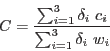
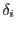
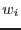

Criteria for inclusion of a source in the output list are as follows:
The maximum value of the source ID number is limited by the number of characters allocated to hexadecimal source ID numbers (parameter numhexchar). The source ID number is a hexadecimal version of the SRC_NUM column.
No source is considered for which the ii_CTS value is null for all three EPIC instruments.
Sources are included only if a weighted sum of the ii_CTS values exceeds mintotalcts. The weight formula is

(1)
where the index runs over the three EPIC instruments,  equals 0 if is a null value but 1 otherwise, and  is a normalized weight associated with the instrument.
ii_DET_ML must be mindetml and ii_MASKFRAC must be minmaskfrac for at least one of the instruments ii.